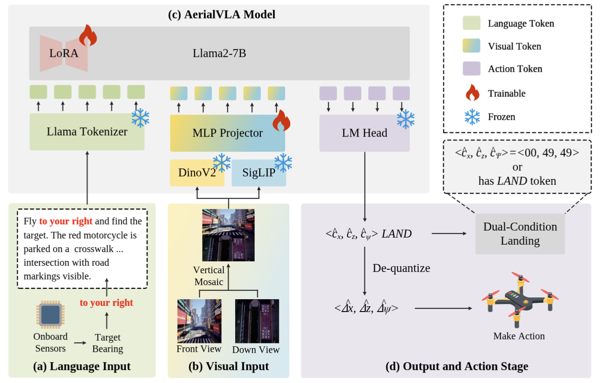

Vision-Language Navigation (VLN) for Unmanned Aerial Vehicles (UAVs) demands complex visual interpretation and continuous control in dynamic 3D environments. Existing hierarchical approaches rely on dense oracle guidance or auxiliary object detectors, creating semantic gaps and limiting genuine autonomy. We propose AeroVLA, a minimalist end-to-end Vision-Language-Action framework mapping raw visual observations and fuzzy linguistic instructions directly to continuous physical control signals. First, we introduce a streamlined dual-view perception strategy that reduces visual redundancy while preserving essential cues for forward navigation and precise grounding, which additionally facilitates future simulation-to-reality transfer. To reclaim genuine autonomy, we deploy a fuzzy directional prompting mechanism derived solely from onboard sensors, completely eliminating the dependency on dense oracle guidance. Ultimately, we formulate a unified control space that integrates continuous 3-Degree-of-Freedom (3-DoF) kinematic commands with an intrinsic landing signal, freeing the agent from external object detectors for precision landing. Extensive experiments on the TravelUAV benchmark demonstrate that AeroVLA achieves state-of-the-art performance in seen environments. Furthermore, it exhibits superior generalization in unseen scenarios by achieving nearly three times the success rate of leading baselines, validating that a minimalist, autonomy-centric paradigm captures more robust visual-motor representations than complex modular systems.

The AeroVLA Architecture. Our framework takes a streamlined dual-view RGB observation (front and downward cameras) and a fuzzy directional text prompt as inputs. By bypassing complex modular mapping and external object detectors, the underlying VLA backbone directly autoregressively decodes these multi-modal inputs into continuous 3-DoF kinematic commands (forward/vertical displacements and yaw changes) alongside a discrete LAND token. This minimalist end-to-end design significantly mitigates causal confusion and enhances flight robustness in unseen open environments.
We provide two supplementary videos demonstrating AeroVLA's performance in unconstrained 3D environments. The user interface layout visually breaks down the complete end-to-end perception-action loop:
<dx, dz, yaw>, alongside the optional LAND command.This demonstration follows the standard asynchronous evaluation mode adopted in the TravelUAV benchmark. It showcases the agent's baseline capability to perform active visual grounding and spatial reasoning via a step-by-step inference process.
To demonstrate AeroVLA's capability for real-time continuous control, we altered the simulator environment to operate in a continuous flight mode without inference pauses. This video illustrates the policy's robustness and agility when processing dynamic inputs in real time, serving as a critical proof-of-concept for future physical deployments on edge computing devices.
Our paper has been accepted to ECCV 2026. The BibTeX will be updated with the official proceeding details once published. For now, please cite our arXiv version:
@article{xu2026aerialvla,
title={AerialVLA: A Vision-Language-Action Model for UAV Navigation via Minimalist End-to-End Control},
author={Xu, Peng and Deng, Zhengnan and Deng, Jiayan and Gu, Zonghua and Wan, Shaohua},
journal={arXiv preprint arXiv:2603.14363},
year={2026}
}